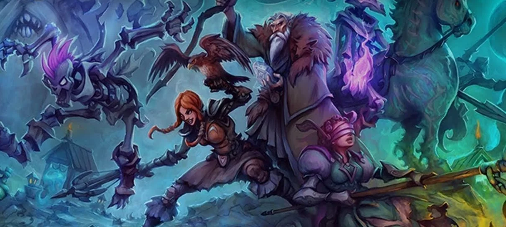

Game News
Após 25 anos, Tibia finalmente terá som

E sim, é sério!
pós 25 anos de puro silêncio, o clássico Tibia finalmente terá som!
O jogo receberá efeitos sonoros e até uma música tema em uma atualização na próxima terça-feira, dia 27 de setembro.